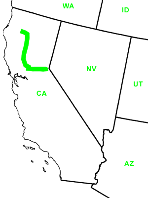

Day Twenty-Five
Lake Tahoe, CA - Douglass City, CA
Date: 07/06/2002
Distance: 337 miles
Weather: Sunny 90's
Who knew the day after Independance Day was such a hot time to vacation? We spent much of today worrying about where we would be sleeping.
So, to traverse California, we went over to Sacramento, up to Redding, and then headed towards the coast on scenic route 299. We drove straight through to Redding and spent awhile checking the various hotel/motels for vacancies. This is not an easy task with a holiday, a budget, and a puppy. Finding nothing, we drove on the twisty and turny route 299.
Luckily, this mountainous road is speckled with campsites. We found a good site in the Douglas City Campground. And, even more good luck- the town over, Weaverville, was hosting fireworks that very evening.
The fireworks were as good as only "small towns trading their elementary school budget for TNT" could be. They towered over Lake Tahoe's display, and were accompanied from our viewpoint by some rowdy town hooligans- equally entertaining.